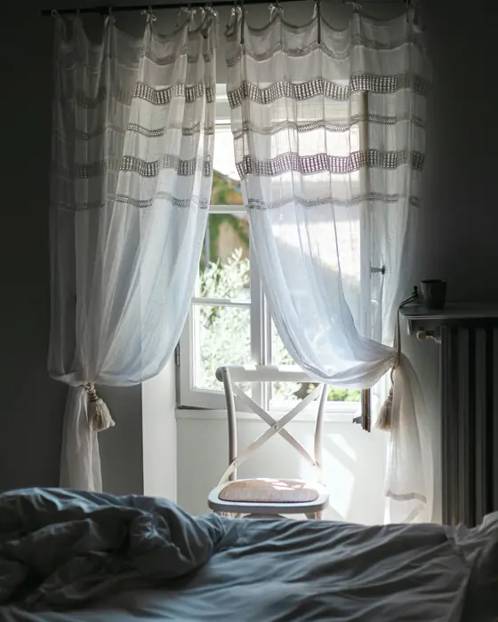
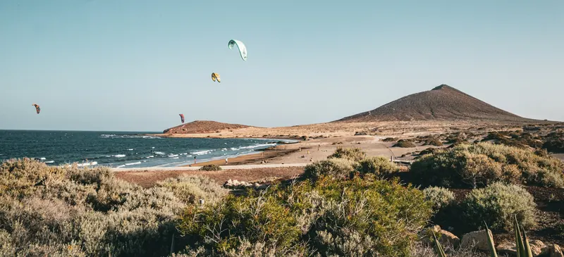

Night sky with shooting stars
Three layers of stars that twinkle and drift very slowly, with a shooting star every few seconds over a Teide skyline. The stars are fixed at build time, not drawn by a script. For stargazing tours, rooftop bars and anything that happens at night.
Cielo Ucanca · Llano de Ucanca
Arriba no hay farolas.
Estrellas con telescopio y chocolate caliente, a 2.000 metros. Salida a las 18:45 · 69 € por persona (ejemplo).
Cielo despejado · luna 12 % · ejemplo
Page colour that changes by section
As each part of the day reaches the middle of the screen, the whole background and text fade to its colours: midday sand, afternoon gold, sunset coral, night navy. Every pair passes the contrast check. For a restaurant's day, a tour's timeline or a hotel's seasons.
Mediodía
13:30
Pescado del día, a la sombra del toldo.
Lo que entró por la mañana en el muelle, a la plancha con ajo y limón.
Tarde
17:00
Una caña fría mientras el sol empieza a bajar.
Papas arrugadas, mojo de la casa y la terraza todavía tranquila.
Atardecer
18:26
La mesa de primera fila.
El sol cae al mar a la izquierda de La Gomera. Reserven la mesa de esa hora: se la guardamos media hora.
Noche
21:00
Velas en la mesa. El mar ya solo se oye.
Cocina abierta hasta las 23:00. Horas de ejemplo.
Sunbeams over a photo
Soft rays of morning light fall from the window across the room and sway very slightly, then settle and stay still. Made from plain gradients, no blur. For a casa rural, a breakfast café, a yoga or spa room, a beach morning.

Casa Tea · La Orotava
Despierten con la luz del valle.
Habitación Drago: cama doble, ventana al jardín y desayuno con mermeladas de la finca.
Desde 95 € la noche · ejemplo
Aurora colour field
Bands of violet, plum and sea-blue drift very slowly behind a heading, like northern lights in the brand colour. Two oversized gradient layers move by transform only, so it stays smooth on phones. White text passes contrast on every band. For beauty, spa, wellness and nightlife.
Lúnula Studio · Los Cristianos
Una hora solo para ti.
Uñas, pestañas y cejas. Pide cita por WhatsApp y te guardamos la hora.
Stage-lamp light
A glowing bar with a cone of warm light under it, which opens out once when the section comes into view. Two cone gradients and one soft glow, no blur. For a live-music night, a bar, a theatre or an event page.
Tasca Picón · Puerto de la Cruz
Noche de timple
Viernes a las 21:30. Música en directo, vino de la casa y cocina hasta tarde. Entrada libre (ejemplo).
Texture overlays
Six textures to lay over a brand colour so a flat section feels printed or woven. All are gradients or inline SVG: no image files, nothing to download. Each one is shown on a showroom brand colour.
- Picón
DotsTasca Picón red
- Fase Neutro
GridFase Neutro blue, like a wiring plan
- Alisio
HalftoneCafé Alisio yellow, dots grow to one corner
- Casa Tea
CrosshatchCasa Tea brick
- Ocaso
Paper grainOcaso sand
- Lúnula
LinenLúnula blue
Frosted ribbed glass
A panel of fluted glass over a photo, with the text on the glass. Two versions to compare: real refraction through an SVG filter, and a cheaper look made from gradients only. Use the switch under the photo. For cafés, spas, boutique hotels and interiors.

Café Alisio · El Médano
Desayunos con viento a favor.
Hasta las 12:00, en el paseo. Sin reservas (ejemplo).
Progressive blur edge
The bottom of a tall photo melts into a blur that gets stronger towards the edge, so a caption bar sits on it cleanly without a hard dark box. Three thin blur layers, each faded in with a mask. For tour cards, room cards and hero captions.

Teide y mar de nubes
5 h · recogida en el hotel · 69 € (ejemplo)
Cielo Ucanca · excursiones
Por encima de las nubes.
Subimos por La Orotava, paramos en el mirador sobre el mar de nubes y esperamos la puesta de sol en Las Cañadas.
Rolling-digit stats
Each digit spins like a car's odometer and lands on its number when the row comes into view. The real figures are in the page text, so Google and screen readers read them straight away. For years in business, jobs done, reviews.
Fase Neutro · electricistas · Adeje y Arona
- Más de 30años en Adeje y Arona
- 2.500clientes atendidos
- 4,9 de 5 estrellasde media en reseñas
Cifras de ejemplo
Review ribbon with a pause button
Short reviews glide past endlessly with soft faded edges, and a band of big words runs the other way. A visible Pause button stops both, and so does holding a finger or resting a mouse on them. With reduced motion it becomes a normal row you swipe. For reviews, partner logos, "open today" banners.
Tasca Picón · reseñas de ejemplo
«El mojo rojo, de otro nivel. Volvimos al día siguiente.»
Marta · Santa Cruz
«Papas arrugadas como las de mi abuela.»
Juan Carlos · La Laguna
«Pequeño, ruidoso y perfecto. Pidan el pulpo.»
Lena · Hamburgo
«Mesa en la calle y vino de Tacoronte por copas.»
Ana · Puerto de la Cruz
«Nos hicieron sitio a las once de la noche. Gracias.»
Iván · Icod
«Croquetas de puchero que no se olvidan.»
Claire · Lyon
Abierto · Open · Geöffnet · Ouvert · Aperto ·
Ticket printing in
A paper ticket feeds out of a slot in little jerks, like a till receipt, with a torn zig-zag edge. The text is real page text, so it reads with or without the animation. For a menú del día, daily specials, an order summary or a price list.
Café Alisio · El Médano
El menú del día, recién impreso.
Cambia cada mañana. Míralo aquí antes de bajar a la playa.
Menú del día
Café Alisio · mié 12 nov · 10:42
- Tostada de aguacate✓
- Zumo de naranja✓
- Café con leche✓
- Yogur con miel de palma✓
Total9,50 €
Precio de ejemplo · ¡viento a favor!
Light running round the main button
A thin light runs round the one button that matters, three times when it comes into view, then stops. It runs again on hover or keyboard focus. Use it on one button per page only. Two colours to choose from: gold and holo.